Bienvenue à
La Ferme Bermond
Ferme Urbaine et Pédagogique.
Jardin Potager et Centre de Compostage
Planifiez votre visite
HISTOIRE D’HIER…
La Ferme Bermond a été fondée en 1969 par Vincent Bermond,brigadier-chef de la police municipale de Nice.
L’initiative voitle jour lorsque la mairie de Nice lui propose de contribuer à lacréation d'une brigade équestre, donnant naissance au“Cavalier du Mont Boron”.
Ce projet, sans imaginer lesimplications sociales, économiques et culturelles futures, apermis à la ferme d’évoluer vers un espace social unique.

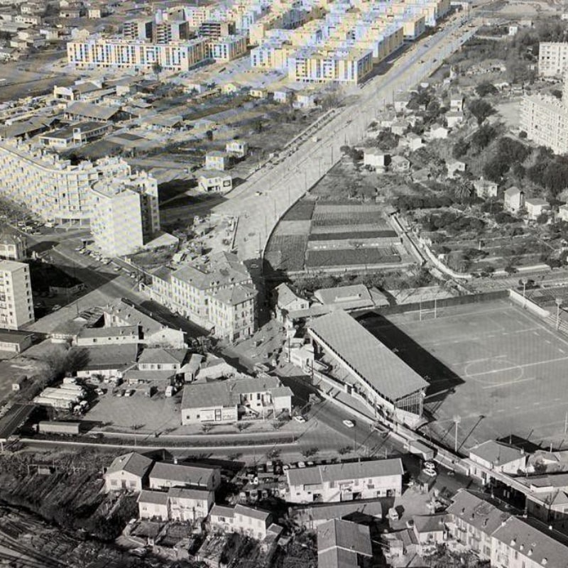

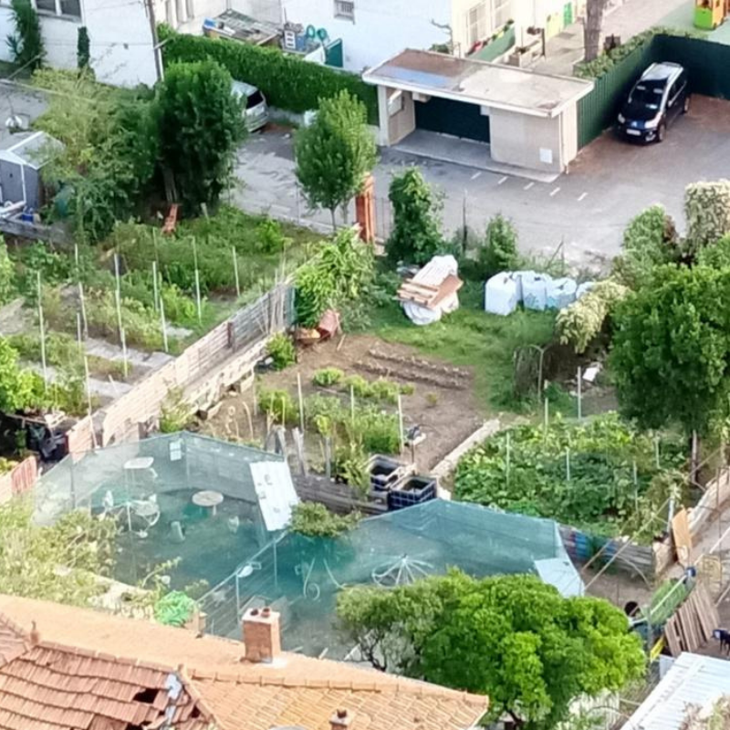
.png)
.png)
... et Aujourd'hui
Aujourd’hui, elle relie agriculture urbaine, permaculture,
écocitoyenneté, développement durable et économie
sociale et solidaire.
Son objectif principal: créer des liens
sociaux et intergénérationnels et promouvoir une
alimentation saine, locale et solidaire.
Elle s’inscrit
profondément dans l’histoire du quartier des Moulins, en
tant que lieu à la fois historique et culturel.
À la disparition de Vincent Bermond, en décembre 2016,
ses amis initient un processus de transition.
Ils s’efforcent
de pérenniser cette initiative d’agriculture urbaine, tout en
réfléchissant aux enjeux environnementaux
contemporains.
Leur mot d’ordre : agir collectivement
pour construire un avenir durable.
La ferme devient alors
un lieu où l’environnement est au service du social, et
inversement, renforçant sa vocation de créer des
connexions inter-sociales.
L’histoire de la ferme repose également sur des questions
fondamentales posées par ses membres: comment habiter
l’espace? Comment lui donner vie? Comment inscrire la
ferme dans l’histoire du quartier et de la ville?
Ces réflexions ont mené à la création d’un jardin potager et d’un
espace de rencontres et interactions, favorisant l’intégration
et la participation des personnes.
Un des grands objectifs de la ferme est de devenir
un espace de cohabitation entre hommes, animaux
et plantes.
Elle met en avant des interactions “inter-
sociales, interculturelles et inter-espèces”, où
chacun contribue à un ensemble harmonieux, riche
en complémentarités.
.png)
.png)
.png)
.png)
.png)
.png)
En 2017, la ferme devient une association sous le nom de «
La Ferme Bermond - Les amis de Vincent ». Ce tournant
associatif marque le début d’un développement progressif
grâce à l'implication des bénévoles, adhérents, et aux
soutiens publics et privés.
Ce travail quotidien fait de la
ferme un espace d’intégration intergénérationnel et
interculturel, et un lieu de transmission de savoir-faire.
Entre 2022 et 2024, dans le cadre du programme gouvernemental « France Relance », la
ferme bénéficie d’une rénovation globale, grâce à des partenariats avec la Ville de Nice,
la Métropole, la Région Sud, la CAF et plusieurs fondations privées. Les travaux réalisés
incluent:
1- La création d’une cuisine solidaire et participative, ainsi que d’un espace de
formation .
2- La rénovation des infrastructures techniques, administratives et pour les
animaux.
3- L’installation de panneaux photovoltaïques et de systèmes d’irrigation
durables
Mission
La ferme devient un lieu d'éducation populaire,
ouvert à tous, créant des liens intergénérationnels,
multiculturels et sociaux. Elle se positionne
comme le premier espace social écocitoyen du
bassin niçois. Située dans un quartier prioritaire et
à un carrefour stratégique (Aéroport, Gare SNCF,
Tram, Gare routière, Marché d’Intérêt National), elle
offre un accès unique à une diversité de publics.
L’objectif de la ferme est de promouvoir et
codévelopper des projets innovants associant la
protection de l’environnement, l’éducation et le
développement social et économique. Ces
initiatives sont réalisées en partenariat avec des
acteurs publics et privés, autour de thèmes tels que
le maraîchage, la permaculture et les écosystèmes
durables.
.png)
.png)
.png)
.png)
.png)
.png)
En tant qu’acteur de la protection de la nature et
de la biodiversité, la ferme s’appuie sur des
savoirs ancestraux et des pratiques
agroécologiques telles que la milpa ou
syntropie. Cette méthode favorise la biomasse,
la création de microclimats et le développement
de la faune et la flore, tout en améliorant les sols
et en réduisant les besoins en eau.
La ferme sensibilise différents acteurs et
participants aux enjeux liés à l’écocitoyenneté,
au développement durable, à la protection de
biodiversité, au bien-vivre et à la transition
écologique. Elle met un point d’honneur à initier
les enfants à ces questions pour encourager la
curiosité, le respect du vivant et la transmission
de valeurs humaines, sociales et éthiques.
Vision
La ferme s’engage à promouvoir le bénévolat grâce aux formations inclusives « Pré Apprentissage Maison (P.A.M.) » axées sur :
.png)
soins
Les soins quotidiens des animaux: préparation des espaces, distribution de nourriture, entretien des enclos
.png)
Cuisine
La cuisine et la transformation des produits: collecte/recueil, préparation, service, entretien.
.png)
Maraîchage
Le maraîchage: semis, plantations, entretien des cultures, récoltes
Grâce au soutien des pouvoirs publics
(État, Région, Département, Métropole,
Ville de Nice, CAF), la Ferme contribue à
l’insertion sociale et professionnelle, en
proposant des emplois, des stages et des
opportunités pour les jeunes et adultes en
alternance, apprentissage ou
professionnalisation.
La Ferme construit un modèle
économique, social et associatif fondé
sur la coopération entre acteurs de
l’économie sociale et solidaire,
entreprises, associations, fondations et
pouvoirs publics. Son ambition :
atteindre une autosuffisance financière,
nourricière et énergétique.
.png)
.png)
.png)
.png)
.png)
.png)
Dans ses réflexions, elle vise une symbiose
parfaite entre végétaux, minéraux et
animaux, adaptée à la perspective du
réchauffement climatique grâce à des
plantations nécessitant de moindres
besoins en eau, à végétaliser les espaces
urbains et à promouvoir des relations
harmonieuses entre humains et nature.
La Ferme prévoit aussi le développement de
son centre de compostage, d’un séchoir,
d’un four solaire, d’un rucher et d’un
système d’aquaponie. Ces projets
s’inscrivent dans une démarche innovante
au service de la transition socio-écologique.
Nos axes de Travail
.png)
L’éducation populaire
.png)
Les activités pratiques
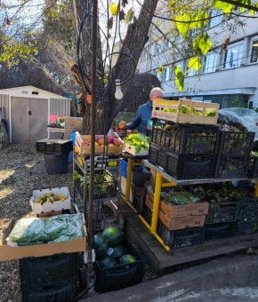
La sensibilisation à l’environnement
.png)
Les partenariats et événements
.png)
L’Économie Sociale et Solidaire
.png)
Les ateliers transgénérationnels et multiculturels
Le "18"
Le « 18 », situé à proximité immédiate de la
Ferme Bermond, illustre la transformation
exemplaire d’un ancien site urbain
abandonné. Son nom fait référence à
l’adresse des anciens bâtiments de la «
Maison pour Tous », qui occupaient
précédemment le 18 Boulevard Paul
Montel.
La réalisation de ce projet a été rendue
possible grâce à une collaboration entre la
Ferme Bermond, la Ville de Nice, le
Conseil Départemental des Alpes
Maritimes et Unis-Cité.
.png)
.png)
.png)
.png)
.png)
.png)
Dans le cadre du programme Green Deal 2024, intitulé « 50
heures Jeunes Engagés pour le Climat », 89 jeunes âgés de 18
à 24 ans et 6 jeunes en service civique ont contribué
activement à la re-végétalisation du site. Encadrés par les
équipes de la Ferme Bermond et épaulés par des bénévoles,
ces jeunes ont joué un rôle clé dans cette transformation
écologique.
Prévu pour devenir un véritable poumon vert de
Nice Ouest d’ici 2025/2026, Le « 18 » soutient
une agriculture syntropique sur sol vivant. Ce
système repose sur la coopération naturelle
entre plantes, microfaunes et invertébrés afin
de recycler les nutriments sans recours aux
intrants artificiels
Après le retrait de 2 000 tonnes d’enrobés, l’ajout de 1 900 tonnes de
terre et de 160 m³ de broyat végétal, les vers de terre, notamment,
contribuent désormais au renouvellement naturel du milieu. Le projet
intègre également des innovations majeures telles que l’implantation
d’arbres fruitiers, la création d’un bassin naturel et l’installation d’un
système d’irrigation goutte-à-goutte.
Ces avancées enrichissent ce modèle d’agroforesterie, transformant
le site en une plateforme pédagogique. Favorisant la syntropie et
l’agroécologie, Le « 18 » offre un cadre propice à l’apprentissage de
l’écocitoyenneté et au développement durable. Ces efforts
s’inscrivent dans le contrat de ville Métropolitain « Engagements
Quartiers 2024-2030 ». En renouvelant la relation entre les humains
et leur environnement, Le « 18 » incarne une vision harmonieuse et
résiliente où chaque geste compte pour renforcer la dynamique d’un
territoire durable.
.png)
.png)
.png)
DE LA TERRE À L’ASSIETTE
Cultiver, cuisiner, partager
« Delaterre à l’assiette » représente un fil conducteur reliant les sols fertiles aux cuisines accueillantes, les savoir-faire du terroir aux engagements contemporains. Ce projet vivant crée des connexions profondes entre humains, plantes, animaux et écosystèmes, nourrissant non seulement le corps, mais aussi le lien social, les apprentissages et les émotions. Depuis 2023, dans le cadre de la médiation socio-culturelle, deux postes salariés à temps plein, financés à 80% par l'État, ont été créés pour animer et enrichir ce projet éducatif axé sur le maraîchage urbain et la transformation alimentaire solidaire.
.png)
.png)
.png)
.png)
.png)

Jardiner
En suivant le rythme des saisons, ils expérimentent les semis, plantations, désherbage et récoltes, tout en découvrant les pratiques d’agriculture urbaine, l’agroforesterie et la gestion durable des ressources.
Cuisiner ensemble
Les légumes du potager et les invendus alimentaires récupérés auprès de grossistes et partenaires (MIN de Nice) sont transformés dans une démarche proactive de lutte contre le gaspillage alimentaire. Ces ateliers collectifs favorisent l’apprentissage culinaire, la convivialité et l’accès à une alimentation saine, locale et solidaire.
.png)
Nos Activitées
.png)
Rencontrer nos pensionnaires
De la basse-cour joyeuse (poules, oies, canards, cailles) aux petits mammifères espiègles (lapins, cochons d’Inde, chiens), sans oublier nos élégants oiseaux (canaris, mandarins, perruches) et quelques poissons colorés, invertébrés et insectes qui peuplent nos bassins ;
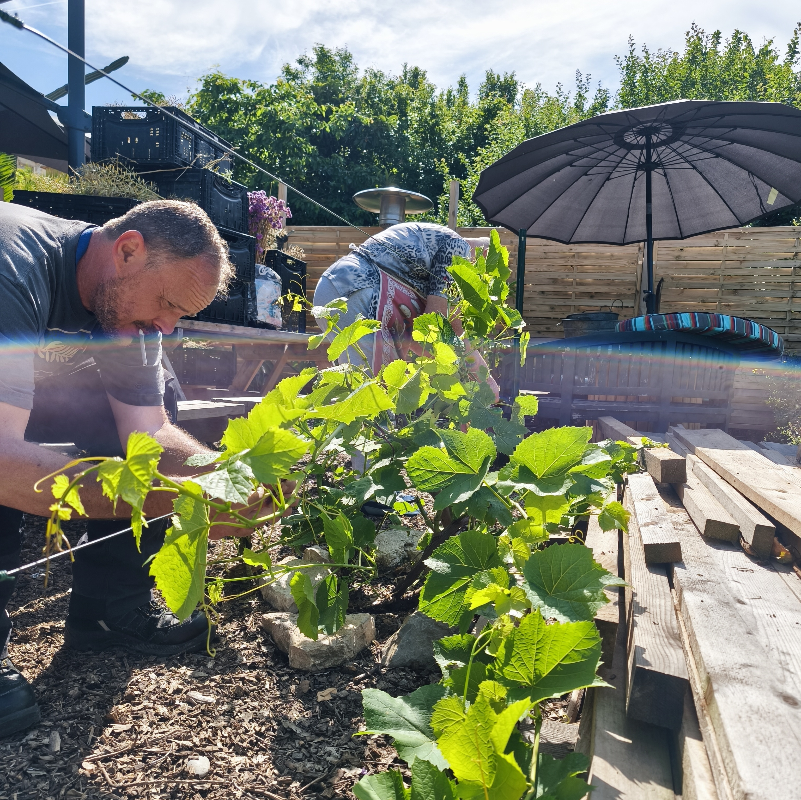
Découvrir la vie du potager
De la plantation au semis, en passant par la récolte et la gestion des déchets verts dans notre zone de compostage ouverte à tou.te.sles habitant.e.sdu quartier.
Apprendre en s’amusant
Participez à nos ateliers de cuisine, où vous pourrez transformer les légumes fraîchement récoltés ou récupérés auprès de nos partenaires (MIN de Nice), dans une démarche anti-gaspillage ;
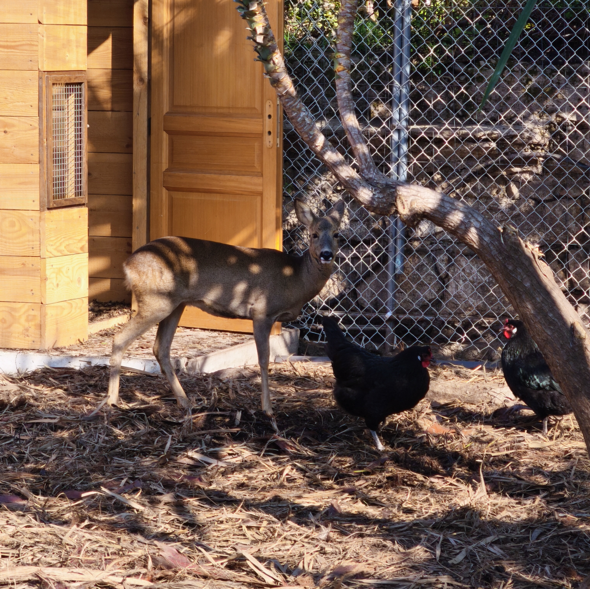
Soigner et choyer les animaux
Participez aux soins quotidiens de nos animaux et partagez des moments uniques avec eux.
Nos Produits
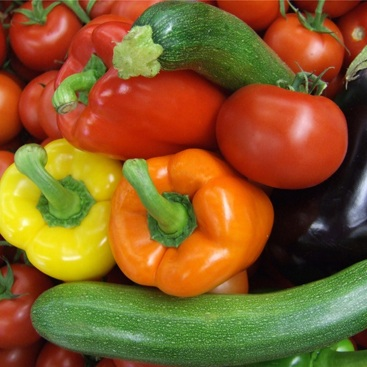
Légumes et aromatiques
Tomates, aubergines, courgettes, concombres, blettes, poivrons, salades, et une variété d’herbes du jardin.
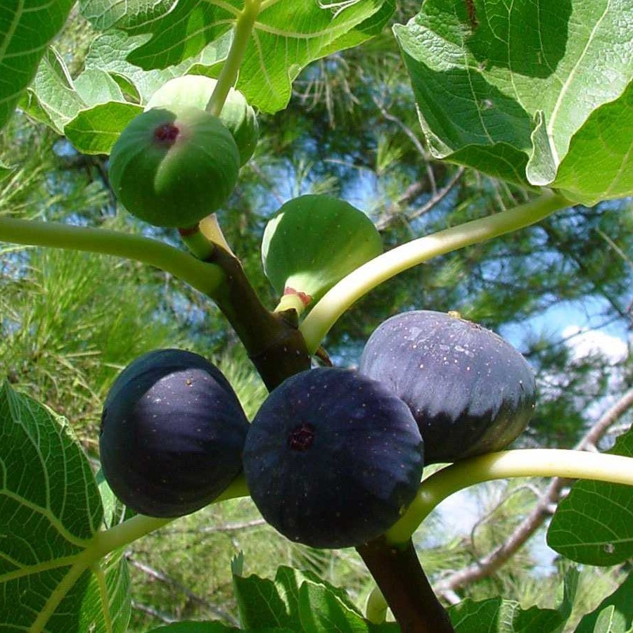
Fruits savoureux
Cerises, abricots, figues, kakis, nèfles, poires, prunes et agrumes.
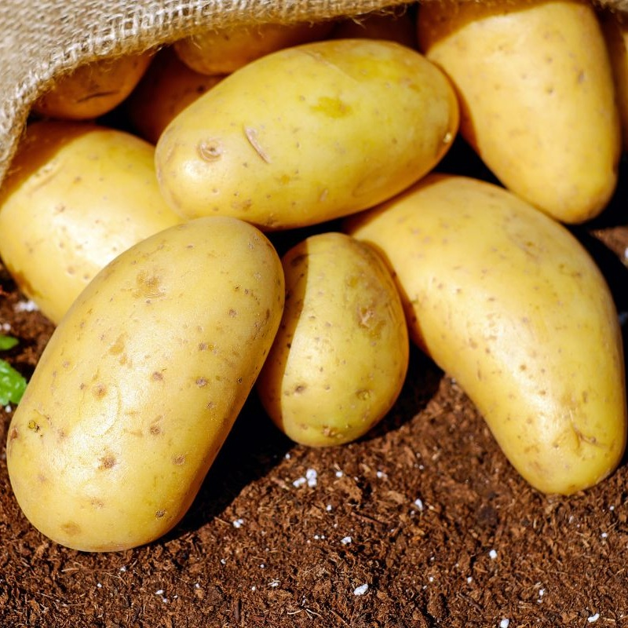
Tubercules et céréales
Pommes de terre, maïs, haricots, tournesols et amarantes.
.png)
Spécialités maison
Confitures, gelées, sirops et sauces préparés avec nos récoltes.
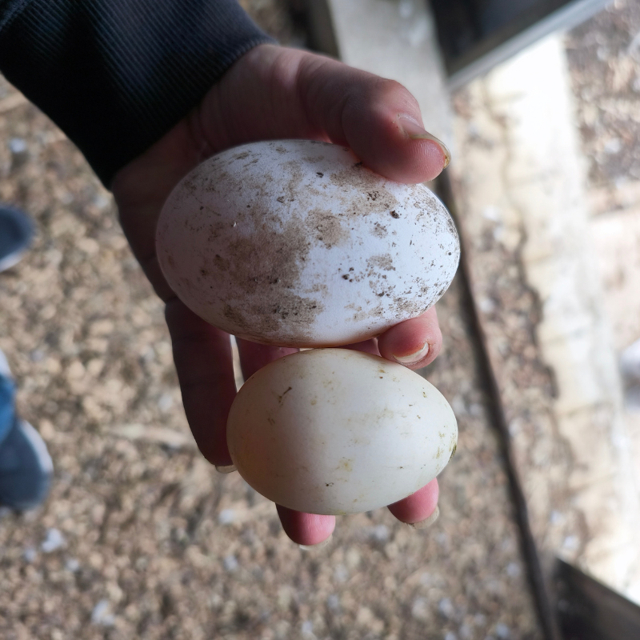
Œufs frais
Pondus par nos poules, oies, canes et cailles, parfaits pour vos omelettes, pâtisseries, quiches ou autres recettes gourmandes.
Devenez Adhérent !
Il existe plusieurs façons de devenir adhérent ; choisissez celle qui vous convient.
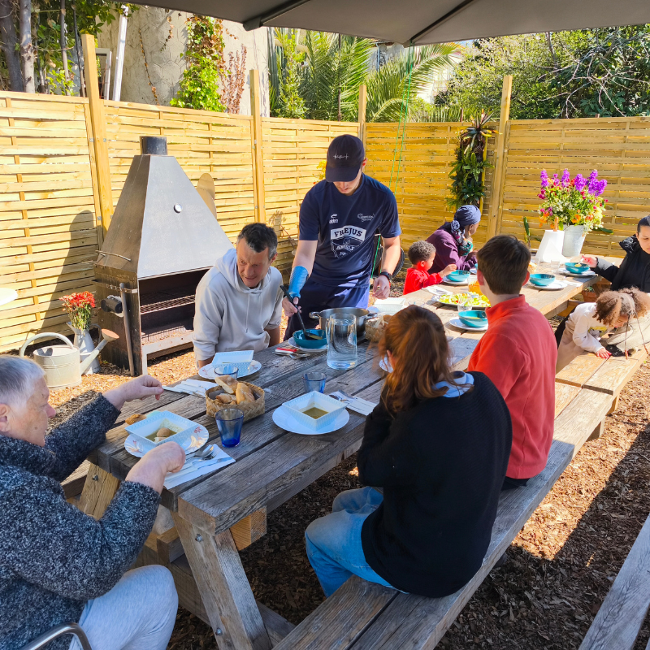
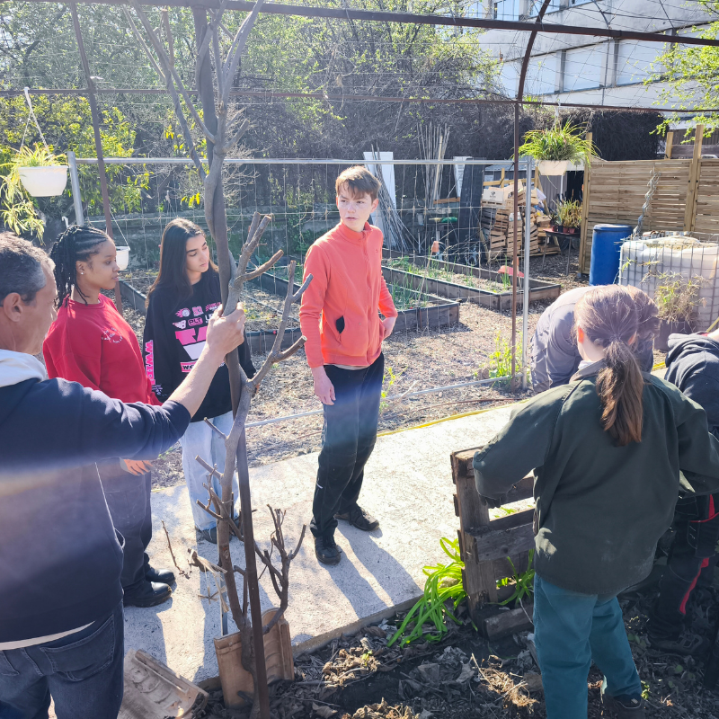
La Ferme en Chiffres
4 680 visiteurs annuels,
dont 84 % sont des
habitants des Quartiers
Prioritaires de la Ville (QPV)
des Moulins et des Sagnes ;
Le dispositif départemental
« Jeune Engagé pour le
Climat » a permis à 89
jeunes âgés de 18 à 24 ans
de réaliser 4500 heures de
bénévolat ;
370 adhérents
accompagnent la ferme,
ainsi que 17 stagiaires, 6
services civiques et 3 000
élèves scolaires accueillis
chaque année ;
Des ateliers participatifs et de
préapprentissage autour de
l’alimentation locale, saine et
solidaire ont permis de servir
184 repas participatifs et 1
800 repas solidaires et
bénévoles ;
La ferme dispose d’une
surface totale de 6 800 m²,
dont 1 500 m² sont consacrés
à un maraîchage en plein
champ, enrichis par une
trentaine d’arbres fruitiers et
une agriculture syntropique ;
3kg de légumes sont récoltés
par mètre carré de surface
cultivable. La ferme élève et
soigne 200 animaux, dont
environ 60 poules pondeuses ;
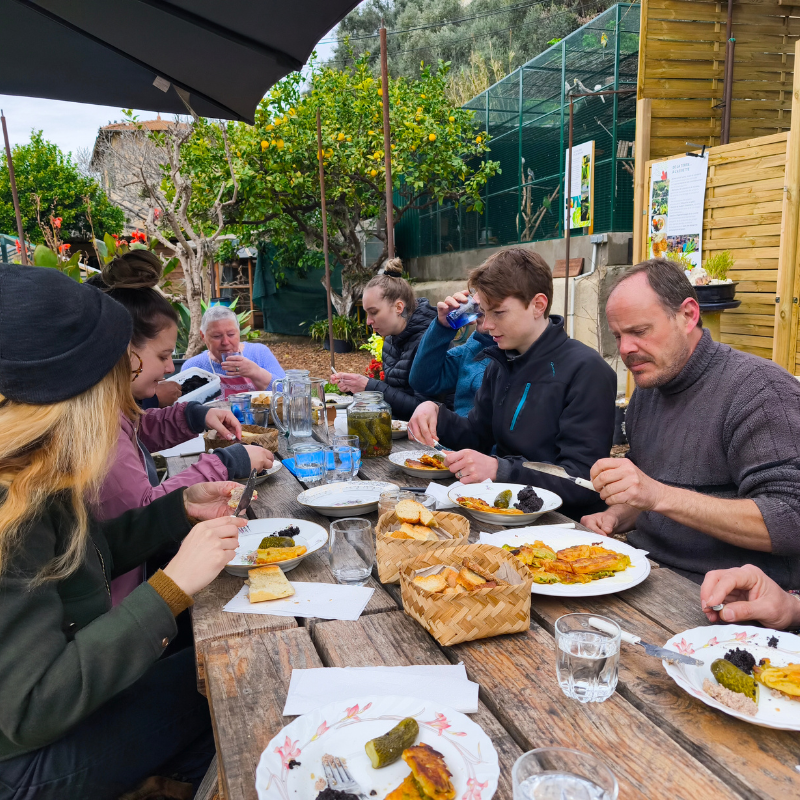
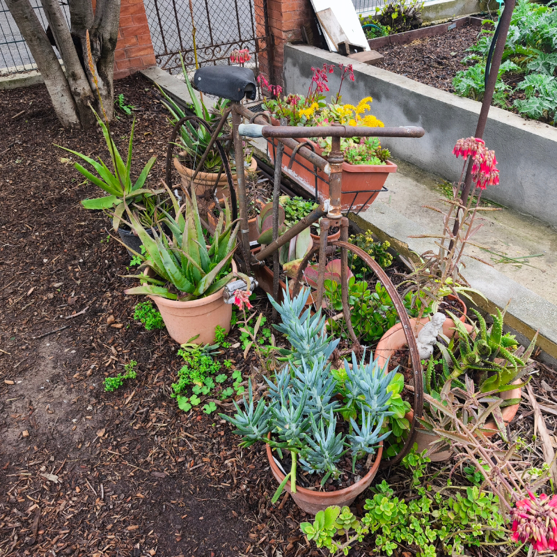
On parle de nous!
Visiter la Ferme
Horaires : Lundi - Vendredi : 9h - 18h
Adresse : 4 Bd Paul Montel, 06200 Nice
Pour nous contacter, envoyez-nous un message directement ci-dessous.
Partenaires
Nous collaborons avec des partenaires locaux pour soutenir nos initiatives et élargir notre impact. Leur soutien est essentiel pour le développement durable de nos projets.